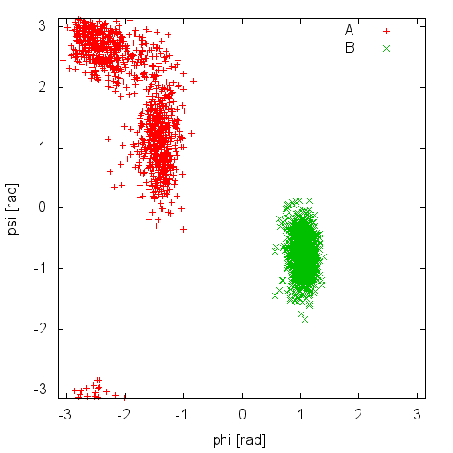
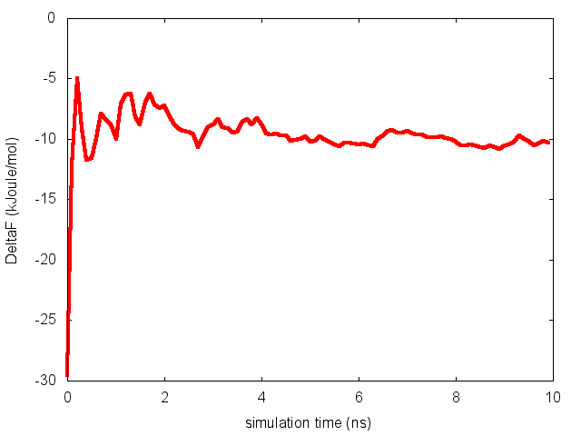
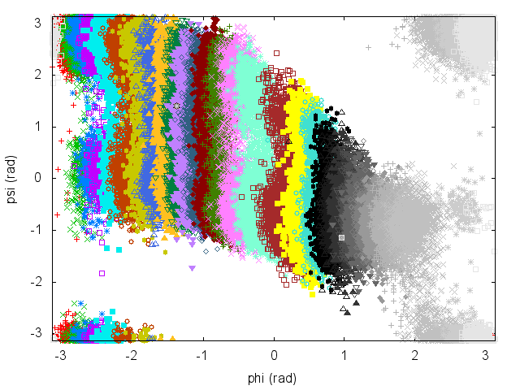
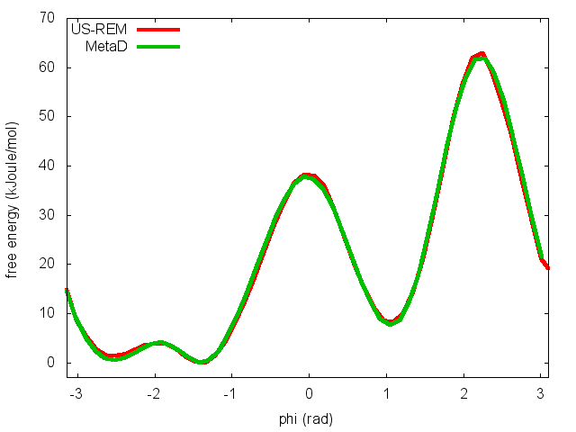
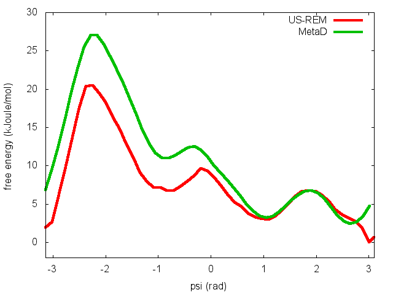
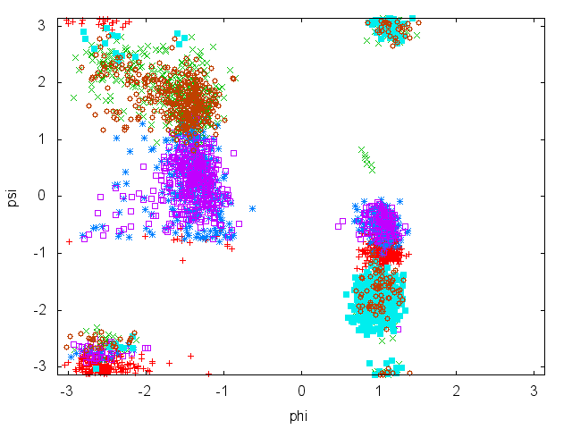

|
|
|
| |
|
|
This document describes the PLUMED tutorial held at CINECA, November 2015. The aim of this tutorial is to learn how to use PLUMED to analyze molecular dynamics (MD) simulations on-the-fly, to analyze existing trajectories, and to perform enhanced sampling. Although the presented input files are correct, the users are invited to refer to the literature to understand how the parameters of enhanced sampling methods should be chosen in a real application.
Users are also encouraged to follow the links to the full PLUMED reference documentation and to wander around in the manual to discover the many available features and to do the other, more complete, tutorials. Here we are going to present only a very narrow selection of methods.
All the tests here are performed on a toy system, alanine dipeptide, simulated in vacuum using the AMBER99SB force field. Simulations are carried out with GROMACS 5.0.4, which is here assumed to be already patched with PLUMED 2.2 and properly installed. However, these examples could be easily converted to other MD software.
All the GROMACS input files and analysis scripts are provided in this tarball. Users are expected to write PLUMED input files based on the instructions below.
We can start by downloading the tarball and uncompressing it:
> tar xzvf cineca.tar.gz
In this tutorial we will play with alanine dipeptide (see Fig. cineca-1-ala-fig). This rather simple molecule is useful to benchmark data analysis and free-energy methods. This system is a nice example because it presents two metastable states separated by a high free-energy barrier. It is conventional use to characterize the two states in terms of Ramachandran dihedral angles, which are denoted with \( \Phi \) and \( \Psi \) in Fig. cineca-1-transition-fig .

The main goal of PLUMED is to compute collective variables, which are complex descriptors of a system than can be used to analyze a conformational change or a chemical reaction. This can be done either on-the-fly, that is during MD, or a posteriori, using PLUMED as a post-processing tool. In both cases one should create an input file with a specific PLUMED syntax. A sample input file is below:
# compute distance between atoms 1 and 10 d: DISTANCE ATOMS=1,10 # create a virtual atom in the center between atoms 20 and 30 center: CENTER ATOMS=20,30 # compute torsional angle between atoms 1,10,20 and center phi: TORSION ATOMS=1,10,20,center # print d and phi every 10 step PRINT ARG=d,phi STRIDE=10
(see DISTANCE, CENTER, TORSION, and PRINT)
PLUMED works using kJ/nm/ps as energy/length/time units. This can be personalized using UNITS. Notice that variables should be given a name (in the example above, d, and phi), which is then used to refer to these variables. Lists of atoms should be provided as comma separated numbers, with no space. Virtual atoms can be created and assigned a name for later use. You can find more information on the PLUMED syntax at Getting Started page of the manual. The complete documentation for all the supported collective variables can be found at the Collective Variables page.
Here we will run a plain MD simulation on alanine dipeptide and compute two torsional angles on-the-fly. GROMACS needs a .tpr file, which is a binary file containing initial positions as well as force-field parameters. For this tutorial, it is sufficient to use the .tpr files provided in the SETUP directory of the package:
However, we also provide .gro, .mdp, and .top files, that can be modified and used to generate a new .tpr file.
GROMACS can be run (interactively) using the following command:
> gmx_mpi mdrun -s ../SETUP/topolA.tpr -nsteps 10000 -x traj.xtc
The nsteps flags can be used to change the number of time steps and topolA.tpr is the name of the tpr file. While running, GROMACS will produce a md.log file, with log information, and a traj.xtc file, with a binary trajectory. The trajectory can be visualized with VMD using:
> vmd confout.gro traj.xtc
To activate PLUMED during a GROMACS MD simulation, you need to add the -plumed flag
> gmx_mpi mdrun -s ../SETUP/topolA.tpr -nsteps 10000 -plumed plumed.dat -x traj.xtc
Here plumed.dat is the name of the PLUMED input file. Notice that PLUMED will write information in the md.log that could be useful to verify if the simulation has been set up properly.
In this exercise, we will run a plain MD simulation and monitor the \(\Phi\) and \(\Psi\) dihedral angles on-the-fly. In order to do so, you need to prepare the following PLUMED input file:
phi: TORSION ATOMS=5,7,9,15 psi: TORSION ATOMS=7,9,15,17 PRINT ARG=phi,psi STRIDE=100 FILE=COLVAR
PLUMED is going to compute the collective variables only when necessary, that is, in this case, every 100 steps. This is not very relevant for simple variables such as torsional angles, but provides a significant speed-up when using expensive collective variables.
PLUMED will write a textual file named COLVAR containing three columns: simulation time, \(\Phi\) and \(\Psi\). Results can be plotted using gnuplot:
> gnuplot # this shows phi as a function of time gnuplot> plot "COLVAR" u 2 # this shows psi as a function of time gnuplot> plot "COLVAR" u 3 # this shows psi as a function of phi gnuplot> plot "COLVAR" u 2:3
Now try to do the same using the two different initial configurations that we provided (topolA.tpr and topolB.tpr). Results from 200ps (100000 steps) trajectories in vacuum are shown in Figure cineca-ala-traj.

Notice that the result depends heavily on the starting structure. For the simulation in vacuum, the two free-energy minima are separated by a large barrier so that the system cannot cross it in such short simulation time. Also notice that the two clouds are well separated, indicating that these two collective variables are appropriate to properly distinguish the two minima.
As a final comment, consider that if you run twice the same calculation in the same directory, you might overwrite the output files. GROMACS takes automatic backup of these files, and PLUMED does it as well. In case you are restarting a simulation, you can add the keyword RESTART at the beginning of the PLUMED input file. This will tell PLUMED to append files instead of taking a backup copy.
Imagine you have already run a simulation, with or without PLUMED. You might want to compute the collective variables a posteriori, i.e. from the trajectory file. You can do this by using the PLUMED executable on the command line. Type
> plumed driver --help
to have an idea of the possible options. See driver for the full documentation.
Here we will use the driver the compute \(\Phi\) and \(\Psi\) on the trajectory previously generated. Let's assume the trajectory is named traj.xtc. You should prepare a PLUMED input file named analysis.dat as:
phi: TORSION ATOMS=5,7,9,15 psi: TORSION ATOMS=7,9,15,17 PRINT ARG=phi,psi FILE=COLVAR_ANALYSIS
(see TORSION and PRINT) Notice that typically when using the driver we do not provide a STRIDE keyword to PRINT. This implies "print at every step" which, analyzing a trajectory, means "print for all the available snapshots". Then, you can use the following command:
> plumed driver --mf_xtc traj.xtc --plumed analysis.dat
Notice that PLUMED has no way to now the value of physical time from the trajectory. If you want physical time to be printed in the output file you should give more information to the driver, e.g.:
> plumed driver --mf_xtc traj.xtc --plumed analysis.dat --timestep 0.002 --trajectory-stride 1000
(see driver)
In this case we inform the driver that the traj.xtc file was produced in a run with a timestep of 0.002 ps and saving a snapshot every 1000 time steps.
You might want to analyze a different collective variable, such as the gyration radius. The gyration radius tells how extended is a molecule in space. You can do it with the following PLUMED input file
phi: TORSION ATOMS=5,7,9,15 psi: TORSION ATOMS=7,9,15,17 heavy: GROUP ATOMS=1,5,6,7,9,11,15,16,17,19 gyr: GYRATION ATOMS=heavy # the same could have been achieved with # gyr: GYRATION ATOMS=1,5,6,7,9,11,15,16,17,19 PRINT ARG=phi,psi,gyr FILE=analyze
(see TORSION, GYRATION, GROUP, and PRINT)
Now try to compute the time series of the gyration radius.
We have seen that PLUMED can be used to compute collective variables. However, PLUMED is most often use to add forces on the collective variables. To this aim, we have implemented a variety of possible biases acting on collective variables. A bias works in a manner conceptually similar to the PRINT command, taking as argument one or more collective variables. However, here the STRIDE is usually omitted (that is equivalent to setting it to 1), which means that forces are applied at every timestep. Starting from PLUMED 2.2 you can change the STRIDE also for bias potentials, but that's another story. In the following we will see how to build an adaptive bias potential with metadynamics and how to apply harmonic restraints. The complete documentation for all the biasing methods available in PLUMED can be found at the Bias page.
In metadynamics, an external history-dependent bias potential is constructed in the space of a few selected degrees of freedom \( \vec{s}({q})\), generally called collective variables (CVs) [70]. This potential is built as a sum of Gaussian kernels deposited along the trajectory in the CVs space:
\[ V(\vec{s},t) = \sum_{ k \tau < t} W(k \tau) \exp\left( -\sum_{i=1}^{d} \frac{(s_i-s_i({q}(k \tau)))^2}{2\sigma_i^2} \right). \]
where \( \tau \) is the Gaussian deposition stride, \( \sigma_i \) the width of the Gaussian for the \(i\)th CV, and \( W(k \tau) \) the height of the Gaussian. The effect of the metadynamics bias potential is to push the system away from local minima into visiting new regions of the phase space. Furthermore, in the long time limit, the bias potential converges to minus the free energy as a function of the CVs:
\[ V(\vec{s},t\rightarrow \infty) = -F(\vec{s}) + C. \]
In standard metadynamics, Gaussian kernels of constant height are added for the entire course of a simulation. As a result, the system is eventually pushed to explore high free-energy regions and the estimate of the free energy calculated from the bias potential oscillates around the real value. In well-tempered metadynamics [9], the height of the Gaussian is decreased with simulation time according to:
\[ W (k \tau ) = W_0 \exp \left( -\frac{V(\vec{s}({q}(k \tau)),k \tau)}{k_B\Delta T} \right ), \]
where \( W_0 \) is an initial Gaussian height, \( \Delta T \) an input parameter with the dimension of a temperature, and \( k_B \) the Boltzmann constant. With this rescaling of the Gaussian height, the bias potential smoothly converges in the long time limit, but it does not fully compensate the underlying free energy:
\[ V(\vec{s},t\rightarrow \infty) = -\frac{\Delta T}{T+\Delta T}F(\vec{s}) + C. \]
where \( T \) is the temperature of the system. In the long time limit, the CVs thus sample an ensemble at a temperature \( T+\Delta T \) which is higher than the system temperature \( T \). The parameter \( \Delta T \) can be chosen to regulate the extent of free-energy exploration: \( \Delta T = 0\) corresponds to standard MD, \( \Delta T \rightarrow\infty\) to standard metadynamics. In well-tempered metadynamics literature and in PLUMED, you will often encounter the term "bias factor" which is the ratio between the temperature of the CVs ( \( T+\Delta T \)) and the system temperature ( \( T \)):
\[ \gamma = \frac{T+\Delta T}{T}. \]
The bias factor should thus be carefully chosen in order for the relevant free-energy barriers to be crossed efficiently in the time scale of the simulation. Additional information can be found in the several review papers on metadynamics [69] [10] [111]. To learn more: Summary of theory
Summary of theory
If you do not know exactly where you would like your collective variables to go, and just know (or suspect) that some variables have large free-energy barriers that hinder some conformational rearrangement or some chemical reaction, you can bias them using metadynamics. In this way, a time dependent, adaptive potential will be constructed that tends to disfavor visited configurations in the collective-variable space. The bias is usually built as a sum of Gaussian deposited in the already visited states.
In this exercise, we will run a well-tempered metadynamics simulation on alanine dipeptide in vacuum, using as CV the backbone dihedral angle phi. In order to run this simulation we need to prepare the PLUMED input file (plumed.dat) as follows.
# set up two variables for Phi and Psi dihedral angles phi: TORSION ATOMS=5,7,9,15 psi: TORSION ATOMS=7,9,15,17 # # Activate well-tempered metadynamics in phi depositing # a Gaussian every 500 time steps, with initial height equal # to 1.2 kJ/mol, bias factor equal to 10.0, and width to 0.35 rad METAD ... LABEL=metad ARG=phi PACE=500 HEIGHT=1.2 SIGMA=0.35 FILE=HILLS BIASFACTOR=10.0 TEMP=300.0 GRID_MIN=-pi GRID_MAX=pi GRID_SPACING=0.1 ... METAD # monitor the two variables and the metadynamics bias potential PRINT STRIDE=10 ARG=phi,psi,metad.bias FILE=COLVAR
(see TORSION, METAD, and PRINT).
The syntax for the command METAD is simple. The directive is followed by a keyword ARG followed by the labels of the CVs on which the metadynamics potential will act. The keyword PACE determines the stride of Gaussian deposition in number of time steps, while the keyword HEIGHT specifies the height of the Gaussian in kJ/mol. For each CVs, one has to specified the width of the Gaussian by using the keyword SIGMA. Gaussian will be written to the file indicated by the keyword FILE.
The bias potential will be stored on a grid, whose boundaries are specified by the keywords GRID_MIN and GRID_MAX. Notice that you should provide either the number of bins for every collective variable (GRID_BIN) or the desired grid spacing (GRID_SPACING). In case you provide both PLUMED will use the most conservative choice (highest number of bins) for each dimension. In case you do not provide any information about bin size (neither GRID_BIN nor GRID_SPACING) and if Gaussian width is fixed PLUMED will use 1/5 of the Gaussian width as grid spacing. This default choice should be reasonable for most applications.
Once the PLUMED input file is prepared, one has to run GROMACS with the option to activate PLUMED and read the input file:
gmx_mpi mdrun -s ../SETUP/topolA.tpr -plumed plumed.dat -nsteps 5000000 -x traj.xtc
During the metadynamics simulation, PLUMED will create two files, named COLVAR and HILLS. The COLVAR file contains all the information specified by the PRINT command, in this case the value of the CVs every 10 steps of simulation, along with the current value of the metadynamics bias potential. We can use COLVAR to visualize the behavior of the CV during the simulation:

By inspecting Figure cineca-metad-phi-fig, we can see that the system is initialized in one of the two metastable states of alanine dipeptide. After a while (t=0.1 ns), the system is pushed by the metadynamics bias potential to visit the other local minimum. As the simulation continues, the bias potential fills the underlying free-energy landscape, and the system is able to diffuse in the entire phase space.
The HILLS file contains a list of the Gaussian kernels deposited along the simulation. If we give a look at the header of this file, we can find relevant information about its content:
#! FIELDS time phi psi sigma_phi sigma_psi height biasf #! SET multivariate false #! SET min_phi -pi #! SET max_phi pi #! SET min_psi -pi #! SET max_psi pi
The line starting with FIELDS tells us what is displayed in the various columns of the HILLS file: the time of the simulation, the value of phi and psi, the width of the Gaussian in phi and psi, the height of the Gaussian, and the bias factor. We can use the HILLS file to visualize the decrease of the Gaussian height during the simulation, according to the well-tempered recipe:

If we look carefully at the scale of the y-axis, we will notice that in the beginning the value of the Gaussian height is higher than the initial height specified in the input file, which should be 1.2 kJ/mol. In fact, this column reports the height of the Gaussian scaled by the pre-factor that in well-tempered metadynamics relates the bias potential to the free energy. In this way, when we will use sum_hills, the sum of the Gaussian kernels deposited will directly provide the free-energy, without further rescaling needed (see below).
One can estimate the free energy as a function of the metadynamics CVs directly from the metadynamics bias potential. In order to do so, the utility sum_hills should be used to sum the Gaussian kernels deposited during the simulation and stored in the HILLS file.
To calculate the free energy as a function of phi, it is sufficient to use the following command line:
plumed sum_hills --hills HILLS
The command above generates a file called fes.dat in which the free-energy surface as function of phi is calculated on a regular grid. One can modify the default name for the free energy file, as well as the boundaries and bin size of the grid, by using the following options of sum_hills :
--outfile - specify the outputfile for sumhills --min - the lower bounds for the grid --max - the upper bounds for the grid --bin - the number of bins for the grid --spacing - grid spacing, alternative to the number of bins
The result should look like this:

To assess the convergence of a metadynamics simulation, one can calculate the estimate of the free energy as a function of simulation time. At convergence, the reconstructed profiles should be similar. The option –stride should be used to give an estimate of the free energy every N Gaussian kernels deposited, and the option –mintozero can be used to align the profiles by setting the global minimum to zero. If we use the following command line:
plumed sum_hills --hills HILLS --stride 100 --mintozero
one free energy is calculated every 100 Gaussian kernels deposited, and the global minimum is set to zero in all profiles. The resulting plot should look like the following:

To assess the convergence of the simulation more quantitatively, we can calculate the free-energy difference between the two local minima of the free energy along phi as a function of simulation time. We can use following script to integrate the multiple free-energy profiles in the two basins defined by the following regions in phi space: basin A, -3<phi<-1, basin B, 0.5<phi<1.5.
# number of free-energy profiles
nfes= # put here the number of profiles
# minimum of basin A
minA=-3
# maximum of basin A
maxA=1
# minimum of basin B
minB=0.5
# maximum of basin B
maxB=1.5
# temperature in energy units
kbt=2.5
for((i=0;i<nfes;i++))
do
# calculate free-energy of basin A
A=`awk 'BEGIN{tot=0.0}{if($1!="#!" && $1>min && $1<max)tot+=exp(-$2/kbt)}END{print -kbt*log(tot)}' min=${minA} max=${maxA} kbt=${kbt} fes_${i}.dat`
# and basin B
B=`awk 'BEGIN{tot=0.0}{if($1!="#!" && $1>min && $1<max)tot+=exp(-$2/kbt)}END{print -kbt*log(tot)}' min=${minB} max=${maxB} kbt=${kbt} fes_${i}.dat`
# calculate difference
Delta=$(echo "${A} - ${B}" | bc -l)
# print it
echo $i $Delta
donePlease notice that nfes should be set to the number of profiles (free-energy estimates at different times of the simulation) generated by the option –stride of sum_hills.

This analysis, along with the observation of the diffusive behavior in the CVs space, suggest that the simulation is converged.
In this exercise, we will run a well-tempered metadynamics simulation on alanine dipeptide in vacuum, using as CV the backbone dihedral angle psi. In order to run this simulation we need to prepare the PLUMED input file (plumed.dat) as follows.
# set up two variables for Phi and Psi dihedral angles phi: TORSION ATOMS=5,7,9,15 psi: TORSION ATOMS=7,9,15,17 # # Activate well-tempered metadynamics in psi depositing # a Gaussian every 500 time steps, with initial height equal # to 1.2 kJ/mol, bias factor equal to 10.0, and width to 0.35 rad METAD ... LABEL=metad ARG=psi PACE=500 HEIGHT=1.2 SIGMA=0.35 FILE=HILLS BIASFACTOR=10.0 TEMP=300.0 GRID_MIN=-pi GRID_MAX=pi GRID_SPACING=0.1 ... METAD # monitor the two variables and the metadynamics bias potential PRINT STRIDE=10 ARG=phi,psi,metad.bias FILE=COLVAR
(see TORSION, METAD, and PRINT).
Once the PLUMED input file is prepared, one has to run GROMACS with the option to activate PLUMED and read the input file. We will submit this job using the PBS queue system, as done for the previous exercise.
As we did in the previous exercise, we can use COLVAR to visualize the behavior of the CV during the simulation. Here we will plot at the same time the evolution of the metadynamics CV psi and of the other dihedral phi:

By inspecting Figure cineca-metad-psi-phi-fig, we notice that something different happened compared to the previous exercise. At first the behavior of psi looks diffusive in the entire CV space. However, around t=1 ns, psi seems trapped in a region of the CV space in which it was previously diffusing without problems. The reason is that the non-biased CV phi after a while has jumped into a different local minima. Since phi is not directly biased, one has to wait for this (slow) degree of freedom to equilibrate before the free energy along psi can converge. Try to repeat the analysis done in the previous exercise (calculate the estimate of the free energy as a function of time and monitor the free-energy difference between basins) to assess the convergence of this metadynamics simulation.
A system at temperature \( T\) samples conformations from the canonical ensemble:
\[ P(q)\propto e^{-\frac{U(q)}{k_BT}} \]
. Here \( q \) are the microscopic coordinates and \( k_B \) is the Boltzmann constant. Since \( q \) is a highly dimensional vector, it is often convenient to analyze it in terms of a few collective variables (see Belfast tutorial: Analyzing CVs , Belfast tutorial: Adaptive variables I , and Belfast tutorial: Adaptive variables II ). The probability distribution for a CV \( s\) is
\[ P(s)\propto \int dq e^{-\frac{U(q)}{k_BT}} \delta(s-s(q)) \]
This probability can be expressed in energy units as a free energy landscape \( F(s) \):
\[ F(s)=-k_B T \log P(s) \]
. Now we would like to modify the potential by adding a term that depends on the CV only. That is, instead of using \( U(q) \), we use \( U(q)+V(s(q))\). There are several reasons why one would like to introduce this potential. One is to avoid that the system samples some un-desired portion of the conformational space. As an example, imagine that you want to study dissociation of a complex of two molecules. If you perform a very long simulation you will be able to see association and dissociation. However, the typical time required for association will depend on the size of the simulation box. It could be thus convenient to limit the exploration to conformations where the distance between the two molecules is lower than a given threshold. This could be done by adding a bias potential on the distance between the two molecules. Another example is the simulation of a portion of a large molecule taken out from its initial context. The fragment alone could be unstable, and one might want to add additional potentials to keep the fragment in place. This could be done by adding a bias potential on some measure of the distance from the experimental structure (e.g. on root-mean-square deviation). Whatever CV we decide to bias, it is very important to recognize which is the effect of this bias and, if necessary, remove it a posteriori. The biased distribution of the CV will be
\[ P'(s)\propto \int dq e^{-\frac{U(q)+V(s(q))}{k_BT}} \delta(s-s(q))\propto e^{-\frac{V(s(q))}{k_BT}}P(s) \]
and the biased free energy landscape
\[ F'(s)=-k_B T \log P'(s)=F(s)+V(s)+C \]
Thus, the effect of a bias potential on the free energy is additive. Also notice the presence of an undetermined constant \( C \). This constant is irrelevant for what concerns free-energy differences and barriers, but will be important later when we will learn the weighted-histogram method. Obviously the last equation can be inverted so as to obtain the original, unbiased free-energy landscape from the biased one just subtracting the bias potential
\[ F(s)=F'(s)-V(s)+C \]
Additionally, one might be interested in recovering the distribution of an arbitrary observable. E.g., one could add a bias on the distance between two molecules and be willing to compute the unbiased distribution of some torsional angle. In this case there is no straightforward relationship that can be used, and one has to go back to the relationship between the microscopic probabilities:
\[ P(q)\propto P'(q) e^{\frac{V(s(q))}{k_BT}} \]
The consequence of this expression is that one can obtained any kind of unbiased information from a biased simulation just by weighting every sampled conformation with a weight
\[ w\propto e^{\frac{V(s(q))}{k_BT}} \]
That is, frames that have been explored in spite of a high (disfavoring) bias potential \( V \) will be counted more than frames that has been explored with a less disfavoring bias potential. To learn more: Biased sampling theory
Biased sampling theory
Often in interesting cases the free-energy landscape has several local minima. If these minima have free-energy differences that are on the order of a few times \(k_BT\) they might all be relevant. However, if they are separated by a high saddle point in the free-energy landscape (i.e. a low probability region) than the transition between one and the other will take a lot of time and these minima will correspond to metastable states. The transition between one minimum and the other could require a time scale which is out of reach for MD. In these situations, one could take inspiration from catalysis and try to favor in a controlled manner the conformations corresponding to the transition state. Imagine that you know since the beginning the shape of the free-energy landscape \( F(s) \) as a function of one CV \( s \). If you perform a MD simulation using a bias potential which is exactly equal to \( -F(s) \), the biased free-energy landscape will be flat and barrierless. This potential acts as an "umbrella" that helps you to safely cross the transition state in spite of its high free energy. It is however difficult to have an a priori guess of the free-energy landscape. We will see later how adaptive techniques such as metadynamics (Belfast tutorial: Metadynamics) can be used to this aim. Because of this reason, umbrella sampling is often used in a slightly different manner. Imagine that you do not know the exact height of the free-energy barrier but you have an idea of where the barrier is located. You could try to just favor the sampling of the transition state by adding a harmonic restraint on the CV, e.g. in the form
\[ V(s)=\frac{k}{2} (s-s_0)^2 \]
. The sampled distribution will be
\[ P'(q)\propto P(q) e^{\frac{-k(s(q)-s_0)^2}{2k_BT}} \]
For large values of \( k \), only points close to \( s_0 \) will be explored. It is thus clear how one can force the system to explore only a predefined region of the space adding such a restraint. By combining simulations performed with different values of \( s_0 \), one could obtain a continuous set of simulations going from one minimum to the other crossing the transition state. In the next section we will see how to combine the information from these simulations. To learn more: Umbrella sampling theory
Umbrella sampling theory
If you want to just bring a collective variables to a specific value, you can use a simple restraint. Let's imagine that we want to force the \(\Phi\) angle to visit a region close to \(\Phi=\pi/2\). We can do it adding a restraint in \(\Phi\), with the following input
phi: TORSION ATOMS=5,7,9,15 psi: TORSION ATOMS=7,9,15,17 res: RESTRAINT ARG=phi AT=0.5pi KAPPA=5 PRINT ARG=phi,psi,res.bias
(see TORSION, RESTRAINT, and PRINT).
Notice that here we are printing a quantity named res.bias. We do this because RESTRAINT does not define a single value (that here would be theoretically named res) but a structure with several components. All biasing methods (including METAD) do so, as well as many collective variables (see e.g. DISTANCE used with COMPONENTS keyword). Printing the bias allows one to know how much a given snapshot was penalized. Also notice that PLUMED understands numbers in the form {number}pi. This is convenient when using torsions, since they are expressed in radians.
Now you can plot your trajectory with gnuplot and see the effect of KAPPA. You can also try different values of KAPPA. The stiffer the restraint, the less the collective variable will fluctuate. However, notice that a too large kappa could make the MD integrator unstable.
Some free-energy methods are intrinsically parallel and requires running several simultaneous simulations. This can be done with GROMACS using the multi replica framework. That is, if you have 4 tpr files named topol0.tpr, topol1.tpr, topol2.tpr, topol3.tpr you can run 4 simultaneous simulations.
> mpirun -np 4 gmx_mpi mdrun -s topol.tpr -plumed plumed.dat -multi 4 -nsteps 500000
Each of the 4 replicas will open a different topol file, and GROMACS will take care of adding the replica number before the .tpr suffix. PLUMED deals with the extra number in a slightly different way. In this case, for example, PLUMED first look for a file named plumed.X.dat, where X is the number of the replica. In case the file is not found, then PLUMED looks for plumed.dat. If also this is not found, PLUMED will complain. As a consequence, if all the replicas should use the same input file it is sufficient to put a single plumed.dat file, but one has also the flexibility of using separate files named plumed.0.dat, plumed.1.dat etc.
Also notice that providing the flag -replex one can instruct GROMACS to perform a replica exchange simulation. Namely, from time to time GROMACS will try to swap coordinates among neighboring replicas and accept of reject the exchange with a Monte Carlo procedure which also takes into account the bias potentials acting on the replicas, even if different bias potentials are used in different replicas. That is, PLUMED allows to easily implement many forms of Hamiltonian replica exchange.
Let's now consider multiple simulations performed with restraints located in different positions. In particular, we will consider the \(i\)-th bias potential as \(V_i\). The probability to observe a given value of the collective variable \(s\) is:
\[ P_i({s})=\frac{P({s})e^{-\frac{V_i({s})}{k_BT}}}{\int ds' P({s}') e^{-\frac{V_i({s}')}{k_BT}}}= \frac{P({s})e^{-\frac{V_i({s})}{k_BT}}}{Z_i} \]
where
\[ Z_i=\sum_{q}e^{-\left(U(q)+V_i(q)\right)} \]
The likelihood for the observation of a sequence of snapshots \(q_i(t)\) (where \(i\) is the index of the trajectory and \(t\) is time) is just the product of the probability of each of the snapshots. We use here the minus-logarithm of the likelihood (so that the product is converted to a sum) that can be written as
\[ \mathcal{L}=-\sum_i \int dt \log P_i({s}_i(t))= \sum_i \int dt \left( -\log P({s}_i(t)) +\frac{V_i({s}_i(t))}{k_BT} +\log Z_i \right) \]
One can then maximize the likelihood by setting \(\frac{\delta \mathcal{L}}{\delta P({\bf s})}=0\). After some boring algebra the following expression can be obtained
\[ 0=\sum_{i}\int dt\left(-\frac{\delta_{{\bf s}_{i}(t),{\bf s}}}{P({\bf s})}+\frac{e^{-\frac{V_{i}({\bf s})}{k_{B}T}}}{Z_{i}}\right) \]
In this equation we aim at finding \(P(s)\). However, also the list of normalization factors \(Z_i\) is unknown, and they should be found selfconsistently. Thus one can find the solution as
\[ P({\bf s})\propto \frac{N({\bf s})}{\sum_i\int dt\frac{e^{-\frac{V_{i}({\bf s})}{k_{B}T}}}{Z_{i}} } \]
where \(Z\) is selfconsistently determined as
\[ Z_i\propto\int ds' P({\bf s}') e^{-\frac{V_i({\bf s}')}{k_BT}} \]
These are the WHAM equations that are traditionally solved to derive the unbiased probability \(P(s)\) by the combination of multiple restrained simulations. To make a slightly more general implementation, one can compute the weights that should be assigned to each snapshot, that turn out to be:
\[ w_i(t)\propto \frac{1}{\sum_j\int dt\frac{e^{-\beta V_{j}({\bf s}_i(t))}}{Z_{j}} } \]
The normalization factors can in turn be found from the weights as
\[ Z_i\propto\frac{\sum_j \int dt e^{-\beta V_i({\bf s}_j(t))} w_j(t)}{ \sum_j \int dt w_j(t)} \]
This allows to straighforwardly compute averages related to other, non-biased degrees of freedom, and it is thus a bit more flexible. It is sufficient to precompute this factors \(w\) and use them to weight every single frame in the trajectory. To learn more: Weighted histogram analysis method theory
Weighted histogram analysis method theory
In this exercise we will run multiple restraint simulations and learn how to reweight and combine data with WHAM to obtain free-energy profiles. We start with running in a replica-exchange scheme 32 simulations with a restraint on phi in different positions, ranging from -3 to 3. We will instruct GROMACS to attempt an exchange between different simulations every 1000 steps.
First we need to create the 32 PLUMED input files and .tpr files, using the following script:
nrep=32
dx=`echo "6.0 / ( $nrep - 1 )" | bc -l`
for((i=0;i<nrep;i++))
do
# center of the restraint
AT=`echo "$i * $dx - 3.0" | bc -l`
cat >plumed.${i}.dat << EOF
phi: TORSION ATOMS=5,7,9,15
psi: TORSION ATOMS=7,9,15,17
#
# Impose an umbrella potential on phi
# with a spring constant of 200 kjoule/mol
# and centered in phi=AT
#
restraint-phi: RESTRAINT ARG=phi KAPPA=200.0 AT=$AT
# monitor the two variables and the bias potential
PRINT STRIDE=100 ARG=phi,psi,restraint-phi.bias FILE=COLVAR
EOF
# we initialize some replicas in A and some in B:
if((i%2==0)); then
cp ../SETUP/topolA.tpr topol$i.tpr
else
cp ../SETUP/topolB.tpr topol$i.tpr
fi
done
And then run GROMACS with the following command:
mpirun -np 32 gmx_mpi mdrun -plumed plumed.dat -s topol.tpr -multi 32 -replex 1000 -nsteps 500000 -x traj.xtc
To be able to combine data from all the simulations, it is necessary to have an overlap between statistics collected in two adjacent umbrellas.
Have a look at the plots of (phi,psi) for the different simulations to understand what is happening. To visualize them all at once as in Fig. cineca-usrem-phi-all, you can prepare the following script:
awk 'BEGIN{print ""; ORS=""; print "p \"COLVAR.0\" u 2:3 notitle,"; for(i=1;i<=30;i++) print "\"COLVAR."i"\" u 2:3 notitle,"; print "\"COLVAR.31\" u 2:3 notitle"; ORS="\n"; print ""}' > plot.plt
and then open gnuplot and load it:
gnuplot> load "plot.plt"

An often misunderstood fact about WHAM is that data of the different trajectories can be mixed and it is not necessary to keep track of which restraint was used to produce every single frame. Let's get the concatenated trajectory
trjcat_mpi -cat -f traj*.xtc -o alltraj.xtc
Now we should compute the value of each of the bias potentials on the entire (concatenated) trajectory.
nrep=32 dx=`echo "6.0 / ( $nrep - 1 )" | bc -l` for i in `seq 0 $(( $nrep - 1 ))` do # center of the restraint AT=`echo "$i * $dx - 3.0" | bc -l` cat >plumed.dat << EOF phi: TORSION ATOMS=5,7,9,15 psi: TORSION ATOMS=7,9,15,17 restraint-phi: RESTRAINT ARG=phi KAPPA=200.0 AT=$AT # monitor the two variables and the bias potential PRINT STRIDE=100 ARG=phi,psi,restraint-phi.bias FILE=ALLCOLVAR.$i EOF plumed driver --mf_xtc alltraj.xtc --trajectory-stride=10 --plumed plumed.dat done
It is very important that this script is consistent with the one used to generate the multiple simulations above. Now, single files named ALLCOLVAR.XX will contain on the fourth column the value of the bias centered in a given position, computed on the entire concatenated trajectory.
Next step is to compute the weights self-consistently solving the WHAM equations, using the python script "wham.py" contained in the SCRIPTS directory. We will run this script as follows:
bash ../SCRIPTS/wham.sh ALLCOLVAR.*
This script will produce several files. Let's visualize "phi_fes.dat", which contains the free energy as a function of phi, and compare this with the result previously obtained with metadynamics.

In the previous exercise, we use multiple restraint simulations to calculate the free energy as a function of the dihedral phi. The resulting free energy was in excellent agreement with our previous metadynamics simulation. In this exercise we will repeat the same procedure for the dihedral psi. At the end of the steps defined above, we can plot the free energy "psi_fes.dat" and compare it with the profile calculated from a metadynamics simulations using both phi and psi as CVs.

We can easily spot from the plot above that something went wrong in this multiple restraint simulations, despite we used the very same approach we adopted for the phi dihedral. The problem here is that psi is a "bad" collective variable, and the system is not able to equilibrate the missing slow degree of freedom phi in the short time scale of the umbrella simulation (1 ns). In the metadynamics exercise in which we biased only psi, we detect problems by observing the behavior of the CV as a function of simulation time. How can we detect problems in multiple restraint simulations? This is slightly more complicated, but running this kind of simulation in a replica-exchange scheme offers a convenient way to detect problems.
The first thing we need to do is to demux the replica-exchange trajectories and reconstruct the continuous trajectories of the replicas across the different restraint potentials. In order to do so, we can use the following script:
demux.pl md0.log trjcat_mpi -f traj?.xtc traj??.xtc -demux replica_index.xvg
This commands will generate 32 continuous trajectories, named XX_trajout.xtc. We will use the driver to calculate the value of the CVs phi and psi on these trajectories.
nrep=32
for i in `seq 0 $(( $nrep - 1 ))`
do
cat >plumed.dat << EOF
phi: TORSION ATOMS=5,7,9,15
psi: TORSION ATOMS=7,9,15,17
# monitor the two variables
PRINT STRIDE=100 ARG=phi,psi FILE=COLVARDEMUX.$i
EOF
plumed driver --mf_xtc ${i}_trajout.xtc --trajectory-stride=10 --plumed plumed.dat
done
The COLVARDEMUX.XX files will contain the value of the CVs on the demuxed trajectory. If we visualize these files (see previous exercise for instructions) we will notice that replicas sample the CVs space differently. In order for each umbrella to equilibrate the slow degrees of freedom phi, the continuous replicas must be ergodic and thus sample the same distribution in phi and psi.

 1.8.17
1.8.17